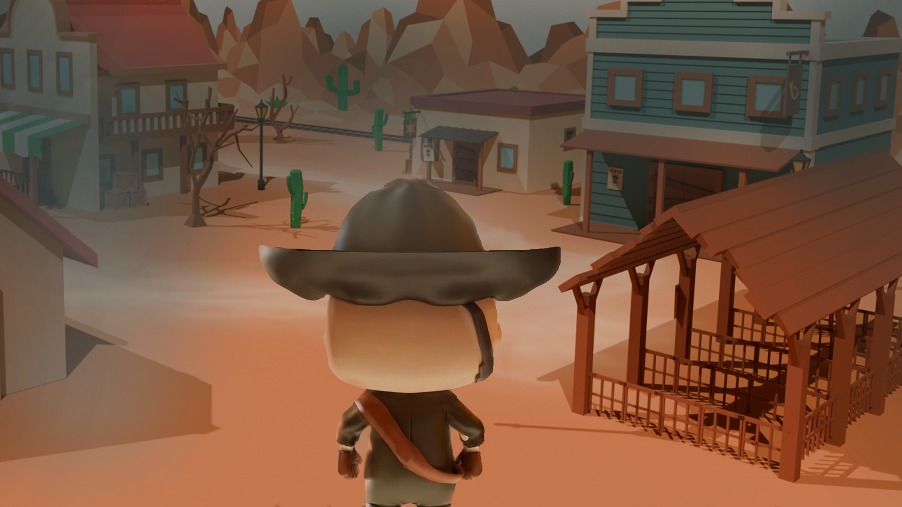

Ein Rätselabenteuer in zwei Welten
Luzz Biteyear:
Legend of Redstone
Eine verlassene Stadt. Seltsame Spuren. Und Luzz mittendrin. Entdecke die Geheimnisse von Redstone.
Jetzt spielen
Trailer
Der Trailer wird hier nach Fertigstellung eingebunden.